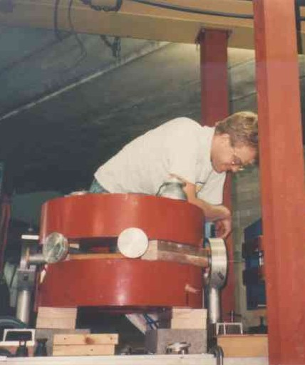

|  | Mailing Address:
Physics Department Wittenberg University PO Box 720 Springfield, OH 45501-0720 |
Office:
Room 307 Barbara Deer Kuss Science Center Phone: (937) 327-7823 FAX: (937) 327-6340 email: pvoytas@wittenberg.edu |
Nobel Prize in Physics-2002 (for "pioneering contributions to astrophysics, in particular for the detection of cosmic neutrinos"). General site: Nobels in Physics
The Internet Pilot to Physics (TIPTOP)
Net Advance of Physics
Journal of Undergraduate Physics Research
SPS National Page
National News of the Society of Physics Students
Physics Web
Research Journals of the American Physical Societ
pvoytas@wittenberg.edu
Last modified: 9 April,
2003 pav